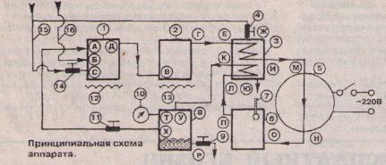
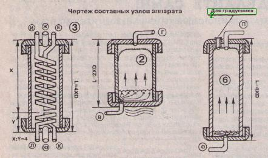
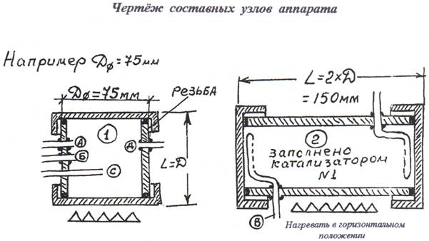

ИЗДАНИЕ 46
ОБЩЕЕ ОПИСАНИЕ
Получаемая при помощи данного аппарата жидкость -
МЕТАНОЛ (МЕТИЛОВЫЙ СПИРТ).
Метанол в чистом виде применяется в качестве растворителя и как высокооктановая добавка к моторному топливу, а также как самый высокооктановый (октановое число равно 150) бензин. Это тот самый бензин, которым заправляют баки гоночных мотоциклов и автомобилей. Как показывают зарубежные исследования, двигатель, работающий на метаноле, служит во много раз дольше, чем при использовании обычного автобензина, мощность его повышается на 20% (при неизменном рабочем объеме двигателя). Выхлоп двигателя, работающего на этом топливе, экологически чист и при проверке его на токсичность вредные вещества практически отсутствуют.
Малогабаритный аппарат для получения этого топлива прост в изготовлении, не требует особых знаний и дефицитных деталей, безотказен в работе. Его производительность зависит от различных причин, в том числе и от габаритов. Аппарат, схему и описание сборки которого предлагаем Вашему вниманию, при Д=75 мм дает три литра готового топлива в час. имеет вес около 20 кг. и габариты приблизительно; 20 см в высоту, 50 см в длину и 30 см в ширину.
ВНИМАНИЕ: метанол является сильным
ЯДОМ. Он представляет собой бесцветную жидкость с температурой кипения 65 град. С. имеет запах, подобный запаху обычного питьевого спирта, и смешивается во всех отношениях с .водой и многими органическими жидкостями. Помните о том. что 30 миллилитров выпитого метанола
СМЕРТЕЛЬНЫ! Но и обычный бензин опасен не меньше.
ПРИНЦИП ДЕЙСТВИЯ И РАБОТА АППАРАТА
Водопроводная вода подключается к "входу воды" (15) и. проходя далее, разделяется на два потока: один поток через краник (14) и отверстие (С) входит в смеситель (1). а другой поток через краник (4) и отверстие (Ж) идет в холо- o дильник (3). проходя через который вода, охлаждая синтез-газ и конденсат бензина, выходит через отверстие (Ю).
Бытовой природный газ подключается к трубопроводу "вход газа" (16). Далее газ входит в смеситель (1) через отверстие (Б), в котором, смешавшись с паром воды, нагревается на горелке (12) до температуры 100-120 град. С. Затем из смесителя (1) через отверстие (Д) нагретая смесь газа и водяного пара входит через отверстие (В) в реактор (2). Реактор (2) заполнен катализатором № 1, состоящим из 25% никеля и 75% алюминия (в виде стружки или в зернах, промышленная марка ГИАЛ-16).
В реакторе происходит образование синтез-газа под воздействием температуры от 500 град. С и выше, получаемой за счет нагрева горелкой (13). Далее нагретый синтез-газ входит через отверстие (Е) в холодильник (3), где он должен охладиться до температуры 30-40 град. С или ниже. Затем охлажденный синтез-газ через отверстие (И) выходит из холодильника и через отверстие (М) входит в компрессор (5), в качестве которого можно использовать компрессор от любого бытового или промышленного холодильника. Далее сжатый синтез-газ с давлением 5-50 через отверстие (И) выходит из компрессора и через отверстие (О) поступает в реактор (6). Ре-акюр (6) заполнен катализатором N? 2, состоящим из стружки 80% меди и 20% цинка (состав фирмы "ICI", марка в России СНМ-1). В этом реакторе, который является самым главным узлом аппарата, образуется пар синтез - бензина. Температура в реакторе не должна превышать 270 град. С. что можно проконтролировать градусником (7) и регулировать краником (4). Желательно поддерживать температуру в пределах 200-250 град. С, можно и ниже. Затем пары бензина и непрореагировавший синтез-газ через отверстие (П) выходят из реактора (6) и через отверстие (Л) входят в холодильник (3). где пары бензина конденсируются и через отверстие (К) выходят из холодильника. Далее конденсат и непрореагировавший синтез-газ входят через отверстие (У) в конденсатор (8), где накапливается готовый бензин, который выходит из конденсатора через отверстие (Р) и краник (9) в какую-либо емкость.
Отверстие (Т) в конденсаторе (8) служит для установки манометра (10), который необходим для контроля давления в конденсаторе. Оно поддерживается в пределах 5-10 атмосфер или больше в основном с помощью краника (11) и частично краника (9). Отверстие (X) и краник (11) необходимы для выхода из конденсатора непрореагировавшего синтез-газа, который идет на рециркуляцию опять в смеситель (1) через отверстие (А). Краник (9) регулируют так, чтобы постоянно выходил чистый жидкий бензин без газа.
Лучше будет, если уровень бензина в конденсаторе будет увеличиваться, чем уменьшаться. Но самый оптимальный случай, когда уровень бензина будет постоянным (что можно проконтролировать путем встроенного стекла или какого-либо другого способа). Краник (14) регулируют так. чтобы в бензине не было газа и в смесителе пара образовывалось лучше меньше, чем больше.
ЗАПУСК АППАРАТА
Открывают доступ газа, вода (14) пока закрыта, горелки (12), (13) работают. Краник (4) полностью открыт, компрессор (5) включен, краник (9) закрыт, краник (11) полностью открыт.
Затем приоткрывают краник (14) доступа воды, а краником (11) регулируют нужное давление в конденсаторе, контролируя его манометром (10). Но не в коем случае не закрывайте краник (11) полностью!!! Далее, минут через пять, клапаном (14) доводят температуру в реакторе (6) до 200-250 град. С. Затем чуть-чуть приоткрывают краник (9), из которого должна пойти струя бензина. Если она будет идти постоянно - приоткройте краник больше, если будет идти бензин в смеси с газом - приоткройте краник (14). Вообще. чем на большую производительность настройте аппарат, тем лучше. Содержание воды в бензине (метаноле) Вы можете проверить с помощью спиртометра. Плотность бензина (метанола) равна 793 кг/мЗ.
Данный аппарат желательно изготавливать из нержавеющей стали или железа. Все детали изготовлены из труб, в качестве тонких соединительных труб можно использовать медные трубки. В холодильнике необходимо сохранить соотношение X/Y=4, то есть, например, если X+Y=300 мм. то X должно быть равно 240 мм. a Y, соответственно. 60 мм. 240/60=4. Чем больше витков уместится в холодильнике с той и с другой стороны, тем лучше. Все краники применены от газосварочных горелок. Вместо краников (9) и (11) можно использовать редукционные клапана от бытовых газовых баллонов или капиллярные трубки от бытовых холодильников. Смеситель (1) и реактор (2) нагреваются в горизонтальном положении (смотрите чертеж).

Принципиальная схема аппарата.
Чертеж составных узлов аппарата


Ну вот. пожалуй, и все. В заключении хотелось бы добавить, что данная конструкция для домашнего изготовления автотоплива была опубликована в одном из номеров журнала "Паритет".
СПОСОБ ПОЛУЧЕНИЯ БЕНЗИНА ИЗ ГАЗА И ВОДЫ
Комментарии автора-изобретателя Геннадия Николаевича Вакса
Что можно и чего нельзя
Какое есть соображение относительно.количества необходимых компрессоров?
Моя установка 91 года, когда бензин стоил что-то около 40 копеек и когда я назло сделал эту машину, была рассчитана на высокое давление и нужно было два компрессора. Сейчас мы ее усовершенствовали, просчитали, получается, что можно вести процесс, подавая нормировано воздух. Такое упрощение появилось благодаря созданию скачков давления в магнитном реакторе. Там внутри среды возникают импульсы, напоминающие хлопки. Эти хлопки и их генератор и являются изобретением, внесенным нами в разработку. Большинство же вещей, которые нами были описаны в связи с метанольной установкой, общеизвестны. Я не химик, я физик и брал данные из литературы. Новое, что также мы внесли, это очень компактный теплообменник. И последнее: если в классических реакторах получения метанола (их много, они распространены) обычно гранулометрический состав сферических гранул катализатора составляет от 1 до 3 сантиметров, мы сделали катализатор мелкодисперсным. Но чтобы проходимость газа не ухудшалась, как раз и происходит периодическое сжатие, в физике плазмы это называется скич-эф-фектом.
Вы рекомендуете три катализатора: оксид меди, оксид цинка и оксид кобальта. С кобальтом очень сложная позиция. Применение кобальта насколько повышает КПД? Для градусника
Не могу сказать. Сам химический состав катализатора взят из классических книг. Первые установки для получения метанола работали с катализатором только из окиси цинка. Это в принципе цинковые белила, белый порошок. Но в дальнейшем химики начали делать и на окиси меди и окиси хрома, окиси кобальта. Есть огромное количество отчетов. В ГПНТБ целый стеллаж стоит. Эти катализаторы более эффективны, чем окись цинка. Предлагаемый способ - измельчение старых "серебряных" монет, они состоят из никеля и меди - дает неплохой катализатор. Их, эти опилки, надо, конечно, обжечь, окислить. И хром можно не добавлять? Можно не добавлять. По всей видимости, оптимального катализатора еще не знают. Так что я думаю, что надо будет просто пробовать.
Схема должна быть герметична. Но катализаторы надо будет вынимать и загружать.
Насчет сварки этой системы. У нас записано, что реакция синтеза идет при 350°. Поэтому, если бы дали по схеме штуцера и кто-то сделал немножечко не так, как следует, в помещение могли бы просачиваться окись углерода, водород и парообразный метанол, газы опасные. Мы дали рекомендацию - заваривать, и эта рекомендация, в принципе, остается. Ну. а если кто-то сделает со всеми предосторожностями открывающуюся пробку, естественно, с медной прокладкой, а не какой-то там другой, чтобы гарантировать герметичность процесса и втожевремяразборность, - это, наверное, возможно. А нет уверенности, так надо не полениться - заварить, потом разварить, пересыпать и заварить заново, с аргоном.
В журнале дана схема конвертера, но нигде нет указаний по технологическому отверстию.
Технологическое отверстие годится любое, чтобы только можно было засыпать порошок. Относительно необходимости уплотнения порошка еще раз хочу подчеркнуть следующее. В конвертере есть и окислитель и восстановитель - метан и кислород. В пазухах эта смесь взрывоопасна, если же она находится в какой-то порошковой среде, опасности нет. В ацетиленовые бачки в трубопроводе всегда прокладывают медные пламегасительные жилки, так как пламя не проходит по капилляру назад. Поэтому мы говорим: надо заполнить конвертер, встряхнуть и еще раз заполнить. Так, чтобы не было пазух. В пазухах может быть и не большой, но взрыв, хлопок.
Обязательно ли вертикальное расположение реактора? Вертикальное обязательно.
А высокотемпературные охладители - можно горизонтально?
Там есть несколько тонкостей, которые надо соблюдать. Недавно приезжали люди: сделали - и у них пошел газ через трубу. Не поставили коллектор, ну. того типа, что на раковине, колено, чтобы вода могла пройти, а газ не мог бы пишите - перед запуском необходимо подогреть.
То есть высокотемпературный теплообменник...
Если Вы обратили внимание, процесс описывается в нескольких формулах. Вначале - при отсутствии кислорода. Реакция идет эндотермическая, с поглощением тепла. Она не состоится, если Вы не будете подводить тепло. После того как Вы подаете кислород, увеличивая давление - там у Вас есть специальный винт - уже горение как бы начинает идти. В принципе это еще не горение, это неполное окисление. Но уже тогда идет с выделением тепла. И Вам уже горелки становятся не нужны. Они нужны только в начале Процесса.
Эжектор: там по схеме в журнале выходное отверстие для метана 2 мм, а диаметр трубы, расстояние...
Здесь небольшая ошибка, надо исправить. При 2 мм -эжектировать не будет. Слишком много воздуха надо подавать. Диаметр отверстия должен быть 1 мм. А расстояние от конца, чтобы былаэжекция, примерно сантиметр. В принципе, это обычная паяльная лампа, только наоборот. У Вас в паяльной лампе в сопла подается горючее, а подсасывается воздух. Здесь наоборот.
А какая-нибудь сеточка должна быть перед эжектором против забивания?
Да, надо ограничить сеточкой. Я это упустил из виду, спасибо за поправку.
Можно сделать разборным загрузочное отверстие каталитического насоса? Если можно, то чем уплотнить?
Каталитический насос - это самая ответственная деталь. Там лучше заваривать. В принципе, насос должен служить очень долго. Основная болезнь всех реакторов, где используется катализатор - он через какое-то время, как говорят химики, отравляется. Скажем, у Вас в газе есть примесь -сера или что-то. На поверхности гранул появляется какая-то пленка. За счет вибрации, которую мы производим, катализатор самоочищается. Этому способствует и то, что феррит у нас более абразивный. чем окись цинка - она очень мягкая. Поэтому отравление поверхности у нас ликвидируется, и работоспособность катализатора продлевается.
Каков диаметр диспергатора?
30 миллиметров. Но это не имеет большого значения. Задача диспергатора в чем? Мы тут тоже немножко схитрили. Нужно дать определенное нормированное соотношение вода-метан. Классическим методом это делают, используя дозатор воды и дозатор метана. Мы отказались от дозаторов. Дело в том, что при температурах порядка 80-100° давление насыщающих паров становится почти атмосферным (собственно, вода потому и кипит при температуре 100 градусов). Так вот, паров воды, которые будут в пузырьках метана, вполне достаточно, чтобы реакцию конверсии соблюдать. Тут встал серьезный технический вопрос. У нас на других экспериментах выявилось, что когда воду пропускаешь через мелкую крошку снизу, утобы пузырьки поднимались, она обязательно найдет себе какую-нибудь дорожку, а остальное сечение не работает, становится пробкой. Поэтому нужно постоянно сбивать, разбивать пузырьки. Чтобы взбалтывать, мы и ставим электромагнитный вибратор. Тогда пузырьки пока поднимаются, полностью насыщаются водой. Это тоже наша разработка.
Как регулируется процентное соотношение метана и воды?
Оно регулируется температурой и, в свою очередь, напряжением и степенью вибрации. Вообще процесс этот очень сложный. Система контрольно-измерительних приборов для подобных процессов занимает солидное помещение. Я был на Таллиннском метаноловом заводе и видел. Сложнейшая система. Конечно, мы не могли ее повторить. Но все-таки реализовали процесс, весь этот КИП. всю эту обратную связь мы свели к одному фитильку. Чем меньше пламя, тем, значит, меньше осталось у Вас непрореагировавшего метана, водорода, окиси углерода. Чем больше их не вступит в реакцию, тем больше будет фитилек пламени на выходе. И Вы уже будете сами оптимизировать процесс. Потому что газ-то из сети поступает равномерно, это константа. Перед оператором главная задача - делать так, чтобы уменьшался фитилек. С этой целью и температуру регулируйте на диспергаторе, и подаваемый воздух. День-два потратите и научитесь регулировать.
Эжекторный смеситель показан, но не дан размер подающей трубки.
Диаметр этот большого значения не имеет. Он может быть миллиметров 8-10.
Давления газа в магистрали достаточно?
Давление какое есть, такое пусть и будет. Вы все равно не можете его ни увеличить, ни уменьшить
А давления воздуха?
Оно на самом деле значения не имеет. Для чего у нас на компрессоре стоит этот датчик давления, точнее регулятор давления. Дело в том, что эта реакция по кислороду должна иметь очень точные показатели - от 2 до 4 процентов кислорода по отношению к метану. Метана должно быть 98-96%. Фактически у нас компрессор с этим регулятором давления играет роль дозатора кислорода, чтобы кислород поступал в строго дозированном количестве. Если Вы кислорода даете больше, то процесс не пойдет, а будет простое горение метана. Задача компрессора- не делать большое давление. Все равно оно стравится из сопел, где эжектор, и будет таким, каково давление газа в распределительной сети. Компрессор достаточно надежен, может работать и в непрерывном режиме. Если Вы в холодильнике ставите на максимум, компрессор практически работает без выключений. Он имеет большой запас прочности.
А если попадут пары фреона? Ведь компрессор заполнен фреоновым маслом.
Если Вы посмотрите внимательно, там сделано так, что масло не может пойти. Вы ставите вверх трубку и ничего страшного не будет. И если пойдет - оно по системе прокатит, и все.
Можно ли заменить газовые горелки на электрические ТЭНы?
Можно. Но это дорого, наверное? Электричество дороже, чем газ. Газ можно брать прямо от одной горелки газовой плитки. Длина пламени примерно 120-150 мм.
Как получить ферритовый порошок?
Могу дать совет, где брать. В Белой Церкви, под Киевом. Там есть завод. Нужно не железо, а керит. Нужна керамика. Железо будет окислятся. Годятся броневые сердечники. Они не жесткие, они рыхлые, но не все.
Но ведь есть, наверно, простой способ получения мелкой керамики?
Я делаю в обычной ступке, размолов через дырочки в тряпочку. Сначала нагреть материал в печи или на газе и после этого бросить в воду. Он не лопнет, а покроется мелкими трещинками, после этого его можно размолоть в ступке.
Теплообменник заваривать?
Можно заваривать. С ним Вы никаких проблем не будете иметь.
Насколько жесткий контроль температурного режима?
Не очень жесткий. В пределах 100". Можно, конечно, было предложить термопару. Но большинство людей проградуи-роватьне смогло бы. Платиновые термопары ктому же очень дороги. Самый простой способ - это термокраски или еще сплавы. У каждого своя точка плавления. Тут должен быть сплав типа высокоплавкого припоя.
Как производить запуск установки?
Включите прежде всего горелку. По всей системе пускается газ. Прежде всего зажигаете фитилек. Газ начинает проходить по диспергатору и насыщается водой. На конечной канистре, в самом конце. Вы зажигаете фитилек, фитиль начинает гореть сильно. Просто горит газ. Ничего больше не происходит. И включаете всю электрическую часть. То есть диспергатор уже начинает работать активно, насыщение идет активно, горелки горят. Поднимается температура до 350-800". Начинается конверсия метана, который превращается в окись углерода и водород. И частично остается нетронутым метан. Попутно появляется углекислый газ. Лишняя вода еще идет. Процесс идет эндотермический, то есть с поглощением тепла.
Постепенно начинаете подавать воздух. Этот процесс включения будет длиться 40-50 минут. Пока теплообменники прогреются, фитилек будет гореть с переменной силой. При конверсии идет выделение тепла. Дальше процесс пойдет сам, он сам себя начинает раскачивать. Я специально написал - где идет выделение тепла, где - поглощение.
Какой предполагаемый срок службы такой установки может быть?
Установка-то будет работать долго, вот срок службы катализатора ограничит непрерывную работу. Тут многое зависит от загрязненности газа, от свойств катализатора. Если в газе много серы, может образоваться серная кислота, она при высоких температурах агрессивна. Прошу прощения за вносимое изменение параметров трубок для холодильника. В первых номерах упоминалось, что они толстостенные,
7 метров длиной. Эго потому, что раньше планировалось
теплообменники делать змеевиками. А потом мы их упрос
тили и сделали коробчатые с заполнителем. Так что полу
чилось короче.
Оправдано ли применение двух теплообменников? Можно обойтись одним?
То есть не греть до диспер! атора? Тогда Вы будете расходовать лишнее тепло, лишнюю электроэнергию.
Но будет один теплообменник.
Для того, чтобы шло испарение, нужно постоянно подводить тепло. Это необходимо, чтобы вода была в определенном соотношении. Влажности, большей чем 100%, добиться нельзя. Но при 100% влажности количество воды при разных температурах разное. Чем выше температура, тем количество влаги при том же проценте влажности меньше. Диспергатор может создать в пузырьке воздуха 100% влажности. Но для того, чтобы эта влажность имела определенное количество воды в граммах на кубометр газа, нужна еще и определенная температура. Вам нужно поддержать 80-90° и регулировать температуру воды, которая в диспергаторе.
8 зависимости от этой регулировки Вы будете иметь раз
ное количество воды на кубометр газа. А у нас формула
обуславливает это соотношение.
Клапан давления самодельный. А можно КИПовский, игольчатый?
Можно. Здесь совершенно безопасно. Если в системе давление становится более, чем давление, с каким прижимает пружина шарик, тогда шарик отжимается, и лишний газ стравливается.
Тогда какое давление должно быть?
А это Вы смотрите. У Вас. в принципе, компрессор холодильника развивает давление до 2.5 атм. Вам же. по всей видимости, нужны будут 1-2 атм. Но Вам не надо ставить манометр. Вы только регулируете по фитильку.
Как теплоизолировать верхнюю камеру конвертера?
Ее нужно теплоизолировать с наружной стороны. Их очень много, разных теплоизоляции, просто когда-то мы научились их из обычного силикатного канцелярского клея делать. Он выдерживает температуру до 15000".
Можно ли ставить конвертер-реактор вплотную к установке?
Нет. Расстояние должно быть 3-4 см.
8 конвертере-реакторе мы имеем высоту 500 мм и не имеем размеров верхней и нижней части.
Смесительная камера и накопительная камера должны быть по 100 мм. Этого вполне достаточно.
Диаметр выходного отверстия?
Это дымоход у Вас. Здесь 5-10 мм. Чтобы вытяжка была.
Вот здесь чисто схематично показано - слив метанола снизу. А если в канистру...
Нет, нельзя.
...если трубочка до дна будет...
Если трубочка до дна будет - можно. Важно не лить метанол сверху.
В реакторе какого размера частицы катализатора, так как от этого зависит размер ячейки сетки?
0,05-0,2 мм.
Правильно ли мы делаем, проектируя на выходе и входе реактора штуцеры, имея в виду, что соединения реактора с другими узлами установки осуществляются нержавеющими трубками?
Штуцера показаны условно. Трубки ввариваются.
В чем принципиальная необходимость применения компрессоров от холодильников?
В их долговечности, надежности, бесшумности, доступности.
Какое давление должна выдерживать герметизированная канистра?
Давление в канистре отсутствует.
МЕТАНОЛ КАК ЗАМЕНИТЕЛЬ БЕНЗИНА
Советы и опыт практиков, сделавших установки и ездящих на метаноле, их варианты установок
Геннадий Иванович Федан. механик, изобретатель, у него много своих разработок. Его особое увлечение - автомобиль. По специальности он горный инженер, выпускник Донецкого политехнического университета. Работая одно время механиком по обслуживанию спидвеистов. тогда и познакомился с использованием метанола
- "Лет восемь как мы начали использовать метанол в автомобиле. В течение первых двух лет мы боролись с коррозией. Образовывался конденсат воды, нужно было как-то это нейтрализовать. В основном коррозия поражала поршневую систему. В "Запорожце" сам двигатель чугунный, а карбюратор дюралевый. Поршневая же система стальнан Подвергались коррозии клапана, седла клапанов Мы пробовали добавлять касторовое масло. Оно значительно повышает компрессию. Авиамоделисты, например, применяют метанол, добавляя 15% касторового масла. Но идет большая коррозия: после каждого использования этой смеси надо все промывать.
Мы спаслись от этого добавлением авиационного масла. На 20 литров метанола мы добавляем 1 л авиационного масла МС-20. Наши традиционные автомобильные масла при сгорании образуют нагар. Горят клапана Из-за конденсата идет большая коррозия. Авиационное масло обладает большой вязкостью, не дает смачиваться поверхности и благодаря этому не происходит коррозии. Итак, в смеси 5% МС-20, остальное метанол.
Должен сказать, что метанол во многих отношениях очень привлекателен как автомобильное топливо. С применением его значительно снижается температура давления. Кстати, у нас двигатель старый, порядком изношенный, а с метанолом работает прекрасно. На оборотах выше средних есть смысл добавлять воду. В этом случае увеличивается топливный запас двигателя. Я пока экспериментально уточняю дозировку. Разрабатываю установку, чтобы была дозированная добавка воды в зависимости от режима работы двигателя. Как только пойдут высокие обороты, начинается впрыскивание.
Допустим, по какой-то причине вам необходимо времен
но или постоянно перейти на бензин. Для этих случаев я уп
ростил регулировку жиклера главной топливной системы.
Дело в том. что под метанол сечение нужно увеличивать.
Если оставить жиклер каким он был для бензина, то при ис
пользовании метанола будет падать мощность. Чтобы это
го не происходило, нужно увеличить сечение жиклера, и дви
гатель заработает прекрасно.
Зимой двигатель с метанолом запускается гораздо легче, чем на бензине, буквально в течение нескольких секунд. Детонации нет вообще. Еще один положительный момент. Часто приходилось оказывать помощь владельцам "Жигулей", у которых образовывалась ледяная пробка в топливном тракте'. Эю сейчас бывае! сплошь и рядом. Придаю; бензин, разбавленный водой. На глаз это не определить. Человек купил, залил - и все. Зимой в топливной системе образуется ледяная пробка. Приходная разбирать двиинель. все это промывать. Автомобилисты тратят на это до двух суток. Между тем, ликвидировать пробку можно буквально в течение двух часов. Я беру 2 л метанола, заливаю в топливную систему, и пробка растворяется. Без разборки двигателя."
Справка для "метанольщиков"
В августовском номере газеты "Авто Ревю- за 1991 год была статья "Бензиновый заводик ... в сарае". Там говорится, что уникальную установку по производству бензина разработал Новосибирский научно-инженерный центр "Цео-сит". Ее можно разместить в грузовом вагончике и получать от 150 литров топлива в сутки, до 50 тонн в год. Установка полностью автономна. Из всех видов энергоносителей для ее работы необходимо лишь электричество. А сырьем могут быть практически любые органические вещества и их смеси - спирты, эфиры, альдегиды, газы металлургических и химических производств, а также газовые конденсаты, компрессаты. Одним словом, вредные отходы, от которых заводы не знают, как избавиться. Режим работы непрерывный. Одному человеку с этой установкой не справиться. А вот кооперативу, хотя бы даже гаражному - вполне Бензиновый заводик будет рентабельным и окупит себя уже через год-полтора. если сырье приобретать не дороже 40 рублей за тонну, а тонну бензина продавать не менее чем за 300 рублей (цены 1991 года). Установка может выдавать бензин с любым октановым числом: А-72. А-76. А-93.
Уникальные издания.